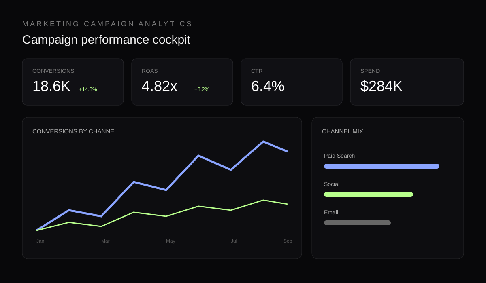

Available for new opportunities
I build data systems
that turn complexity into clarity.
Data Engineering Analyst focused on SQL, Python, PySpark, Power BI and scalable data solutions — from raw data to decision-ready insight.
SQL PYTHON PYSPARK POWER BI AWS REDSHIFT DATA ENGINEERING BUSINESS INTELLIGENCE SQL PYTHON PYSPARK POWER BI AWS REDSHIFT
01 — Profile
Engineering data with an analyst's eye.
I'm Kurian Abraham K P, a Data Engineering Analyst with 4+ years of experience building data solutions, analytics workflows and business intelligence experiences.
RoleData Engineering Analyst
CompanyIntenso Tech Solution
Experience4+ years
DomainsBFSI · Healthcare · Marketing · E-Commerce
02 — Featured work
Four projects.
Four different data stories.

01 / BFSI
Enterprise Fraud Data Platform
Scalable fraud analytics and data engineering workflow.
View case study ↗
02 / MARKETING
Marketing Campaign Analytics
Campaign performance, conversion and ROI intelligence.
View case study ↗
03 / SALES
Product Sales & Revenue Analytics
Revenue trends, products, profitability and KPI movement.
View case study ↗
04 / HEALTHCARE
Claims & RCM Analytics
Claims lifecycle, collections, denials and revenue-cycle performance.
View case study ↗03 — Next
Want the full story?
The new site is no longer a single scroll. Use the navigation to explore my profile, detailed project case studies, experience, CV and contact page.